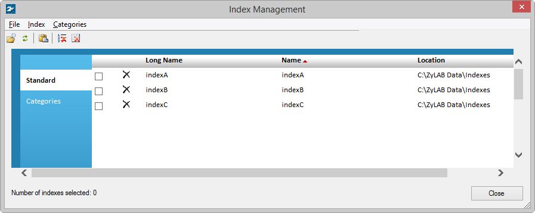
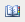
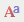
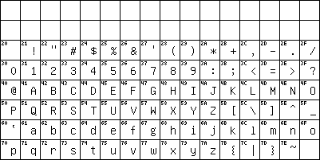
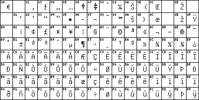

or
Click the Delete button:
The Index Management dialog appears.

After you have created indexes, you may want to change them. You might want to remove, erase or delete an index. Or, you might want to change the index settings, including the Long Index Name.
You can choose from three options to clean up your data:
The index is removed from the list of indexes. The data will remain on the system. You can add the index again, if you want to (File > Open. File > Add index). Removing an index may be helpful in case you have many indexes you don't use, but are not prepared to throw away. Also, less indexes makes it easier to find the right one. Moving indexes to categories also makes them easier to find. See Create and edit categories.
Only the vocabulary of the index will be erased. All index settings (keys fields, Table of Contents, Concepts, etc.) will remain available. The next time you build an index, you can use the same index definition. Erase your index if you get many unresolved links, or if you want to clean up your index. Also, erase and rebuild your index, if the index has been corrupted (for example, due to a system crash during indexing).
All files within the index directory (except files within the Text and Tiff directories), will be erased. Files that are not expected within this directory, will also be erased from the system!
All index files (including thesaurus, character sets and noise words) and the index directory (including files that are not index related), will be deleted. Deleting your index means that the index definition, as well as the contents of the index, are deleted. This is done when the index is not needed anymore.
ZyINDEX is open.
The index is removed from the index list.
ZyINDEX is open.
The index is erased.
ZyINDEX is open.
The index is deleted.
ZyINDEX is open.
You have changed one or more settings of the index.
Use the remaining buttons to directly change
the list of noise words 
Noise words are frequently occurring words, with little meaning. You would not search for this words. These words are not added to the index. Noise words are, for example, prepositions (to, in, of), conjunctions (and, or, but), articles (the, an), pronouns (she, he, they), and certain common verbs (come, see, take). All other words are content words (tokens). You search on content words.
Change the list of noise words before files are added to the index.
the character set (charset) 
The character set determines how words are separated, which characters are indexed, which ones are used for punctuation, etc.
the field definitions (Define fields) 
You can change the field definitions. For more information, see the ZySCAN manual > Add fields.
the email properties
You can identify which email fields of messages in a .pst email archive, should be extracted and indexed as key fields.
the custom data folders 
You can start the old (v4) interface of ZyINDEX. This enables you to change the locations of the data folders like you did in v4. All created indexes will be stored in the index list. In earlier versions the format of this file was .lst, now an .XML file is created as well.
Edit the excluded file types:
Comments, formats and keys can be edited by double clicking on these words. Changing of the comment mode can be handy in case it is necessary that no comment be shown in the result list of ZyFIND.
ZyINDEX is open.
The Long Index Name is changed.
Noise words are frequently occurring words, with little meaning. You would not search for this words. These words are not added to the index. Noise words are, for example, prepositions (to, in, of), conjunctions (and, or, but), articles (the, an), pronouns (she, he, they), and certain common verbs (come, see, take). All other words are content words (tokens). You search on content words.
Change the list of noise words before files are added to the index.
In case you have an archive containing two different languages it is possible to combine the noise words of these two languages. This will save hard disk space. Words that are used as operators in search queries can be removed but it is still not possible to search on them. In case there are some words you don’t want users to be able to search on: add them to the noise word list. The other way around is also possible of course.
The noise word list is stored in the index and has a .NOI extension.
The character set determines how words are separated, which characters are indexed, which ones are used for punctuation, etc. All possible characters that can be recognized and searched on can be found in the character set.
Character sets and Windows Code Pages
The most common character set is the American Standard Code for Information Interchange (ASCII) which describes 256 characters, punctuation including old style signals such as the bell signal etc. However, after the fast internationalization of the computer there became a need to customize these codes for certain languages containing accented characters. Most accented characters used in western-European languages are coded in the standard ASCII set. However, languages with entirely different character sets, for example Russian and Arabic, or some Latin based languages with very rare accents, i.e. Serbia, are not present in the standard ASCII table. To facilitate such international character sets Microsoft has introduced the concept of code pages in Windows. Basic concept of the codepage is that it represents every one of its 256 characters with a single byte. Examples of code pages in Windows are:
Code page 1252: Windows Latin-1
Code page 1251: Windows Cyrillic
For example, the Windows Latin-1 character set consists of the standard US ASCII 7-bit set containing 128 characters:

And the next 128 characters are specific to the Windows Latin-1 character set:

The Index Character Map
ZyINDEX can index text in any code page. However, depending on the code page, some characters should be ignored, or two different characters should be treated as the same character or should be indexed but treated in some special way because they are at the end of a sentence, i.e. period, exclamation mark etc. These settings are stored in the index character map specifying two properties for every one of the 256 characters in the code page:
Should it be mapped to another character?
What type of processing is needed for the character?
Character Mapping
The character set shows the different types of processing that are used for the characters. The character mapping can be different for different languages. Typically, indexes are made case insensitive by mapping all upper case characters to their lower case variants. Thus A is mapped on a, B on b etc. Furthermore, a user searching an English index probably does not want to distinguish accented characters such as À, Á, Â, Ã, Ä and Å. All these characters will be mapped to a. For instance in the Swedish language these characters have different mapping numbers.
Type of processing
Five different types of character processing can be distinguished:
Token
Hyphen
Punctuation
Apostrophe
Unused
Token processing
In a typical character map all normal letters of the alphabet and all numbers are processed as tokens. Token processing is normal Build-an-Index processing. After processing is complete, any string made up of characters receiving token processing can be the subject of a search. In other words, tokenized characters make up the words you search for. Certain other characters, while considered part of the Token set, require special processing.
Hyphen processing
Hyphen is the minus sign and is used as a connector in case a word at the end of a line continues at the next line. Such a word is stored four times in the index: as the word before the hyphen, as the word after the hyphen, as the word connected with the hyphen and as the complete word without the hyphen. For example, hard-disk will be searchable as hard, disk, harddisk and hard-disk.
In case you have a set of hyphens in a row, it is possible that the Index engine doesn’t understand it any more and will give a too many tokens error. This may happen for instance in cases with low quality images causing the OCR engine in ZySCAN to produce many hyphens. (Note that this can be prevented by selecting the prevent punctuation option in the scan template).
Punctuation processing
Build uses punctuation processing for characters trailing a word, for example example: !, #, $, %, &, *, +, , , ., /, :, ;, =, ?, @. Build strips these characters during processing so that they do not interfere with searches. For example, a name J.R.Ewing will be searchable as jrewing.
Note that ( ) and < > are not typical punctuation characters.
Apostrophe processing
When words contain a normally occurring apostrophe, for example, she’s or they’re or O’Brien, Build uses apostrophe processing. The word appears to ZyINDEX as if they are not present
Unused characters are characters we cannot search on.
The file with the character set can be found in the index directory and has a .CHR extension. The file that controls the actual mapping of characters on another character is the .EN3 file.